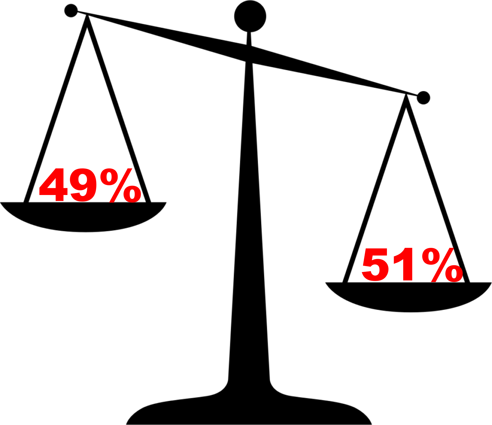

| Total | Fired | Retained | % Fired | % Retained | |
|---|---|---|---|---|---|
| Black | 1512 | 130 | 1382 | 8.6% | 91.4% |
| White | 2900 | 87 | 2813 | 3.0% | 97.0% |
Discriminating Between Statistical Tests
Applications of Probabilistic Methods and Models
in Discrimination Lawsuits in the United States
Criminal and Civil Cases
In the U.S. Justice System, there are two forms of legal proceedings; criminal law and civil law.
- The defendant is presumed innocent until proven guilty of a criminal act.
- The burden of proof is on the prosecution to prove that the defendant is guilty beyond a reasonable doubt.

- The defendant is accused of causing harm and/or damages through their actions.
- The plaintiff must show that the defendant is likely liable for damages based on a “preponderance of the evidence”.
- If the defendant is found liable, the court will determine a legal remedy to compensate for the harm to the plaintiff(s).

Applying Relative Risk
- The standard in many discrimination cases is to examine the relative risk between the groups.
- Relative risk is a ratio which compares the likelihood of an event or outcome across multiple groups.